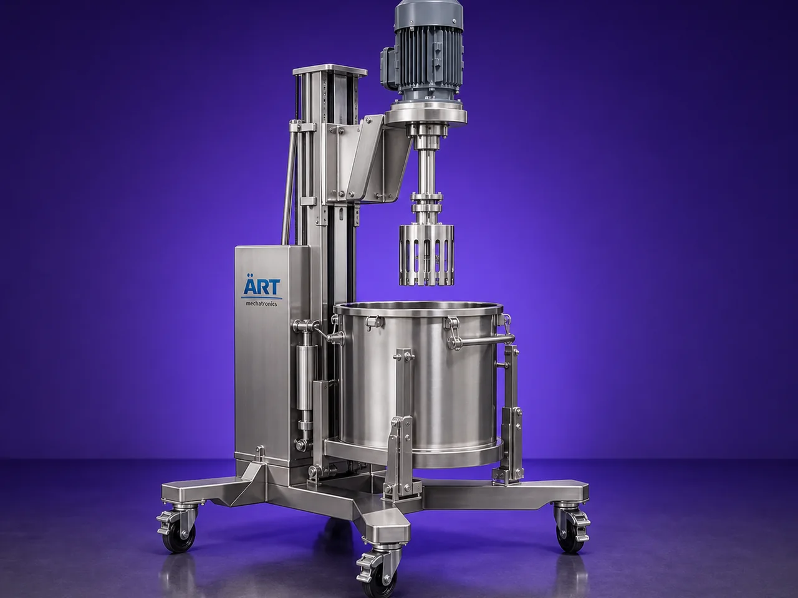

High Shear Mixer Machine (Industrial High-Speed Homogenizing & Emulsifying System)
A High Shear Mixer Machine, also known as a High Shear Homogenizer, High Speed Emulsifier, or Rotor Stator Mixer, is an advanced industrial mixing system designed for intensive mixing, emulsifying, homogenizing, dispersing, dissolving, and particle size reduction of liquids, powders, slurries,…

About the High Shear Mixer
The machine operates using a high-speed rotor-stator mechanism, where material is subjected to: ✔ High shear force ✔ Turbulence ✔ Hydraulic stress ✔ Mechanical impact
This process creates: ✔ Extremely fine dispersion ✔ Stable emulsions ✔ Uniform homogenization ✔ Lump-free mixing ✔ Rapid powder incorporation
High shear mixers are widely used in industries such as:
• Pharmaceuticals
• Cosmetics
• Food & beverages
• Chemicals
• Paints & coatings
• Adhesives
• Personal care products
• Battery and specialty material industries
where precision mixing, emulsification, and ultra-uniform product consistency are essential.
The machine is highly suitable for: ✔ Cream and lotion manufacturing ✔ Syrup preparation ✔ Emulsion formation ✔ Slurry processing ✔ Powder-liquid mixing ✔ Viscous material blending ✔ Nano and fine dispersion applications
ART Mechatronics offers high-performance high shear mixer machines, engineered for maximum mixing efficiency, hygienic operation, process precision, and reliable industrial performance.
One machine, many names
Buyers search for this equipment under many terms — we manufacture all of them:
Working Principle of High Shear Mixer Machine
Generates intense shear and turbulence
Types of High Shear Mixer Machines
Industries Using High Shear Mixer Machine
💊 Pharmaceutical Industry
- Syrups
- Ointments
- Suspensions
💄 Cosmetic Industry
- Creams
- Lotions
- Gels
🍃 Food & Beverage Industry
- Sauces
- Emulsions
- Beverage mixing
⚗️ Chemical Industry
- Chemical emulsification and slurry processing
🎨 Paint & Coating Industry
- Pigment dispersion and paint blending
🧼 Detergent Industry
- Liquid detergent emulsification
🔋 Battery & Specialty Material Industry
- Slurry and conductive material mixing
Features & Advantages
✔ Extremely fine and uniform mixing ✔ Powerful emulsification and homogenization ✔ Rapid powder incorporation ✔ High-speed rotor-stator technology ✔ Suitable for high-viscosity materials ✔ Excellent particle size reduction ✔ Hygienic and GMP-compliant construction ✔ Heavy-duty industrial design ✔ Low processing time and high efficiency ✔ Suitable for heating and cooling integration
Technical Highlights
- Capacity: Lab scale to industrial production scale
- Mixing Technology: Rotor-stator high shear mixing
- Construction: Stainless Steel / GMP design
- Speed: High RPM variable speed system
- Heating/Cooling: Optional jacketed system
- Operation: Manual / Automatic / PLC-based
- Optional Features:
- Vacuum system
- Inline processing
- CIP system
Turnkey High Shear Mixing Solutions
ART Mechatronics offers:
- Complete high shear mixer system design
- Vacuum and jacketed mixing integration
- Heating and cooling systems
- Automation and process control
- Installation & commissioning
- After-sales service & AMC
Why Choose Art Mechatronics
- Expertise in advanced industrial mixing technology
- Customized solutions for precision industries
- Hygienic and GMP-compliant machine designs
- High-performance and energy-efficient systems
- Proven industrial reliability
Applications
- Pharmaceutical Manufacturing Plants
- Cosmetic Production Facilities
- Food & Beverage Processing Units
- Chemical Processing Industries
- Paint & Coating Manufacturing Plants
- Battery Material Processing Units
Industries that use the High Shear Mixer
Related Mixing & Blending machines
Get pricing & specs for the High Shear Mixer
Share the product, target capacity, current process and plant location. These details help our engineers discuss the right machine or line configuration.
One partner, from design to start-up
ART Mechatronics designs, manufactures, installs and commissions your High Shear Mixer solution with regional presence in India, UAE and Thailand.